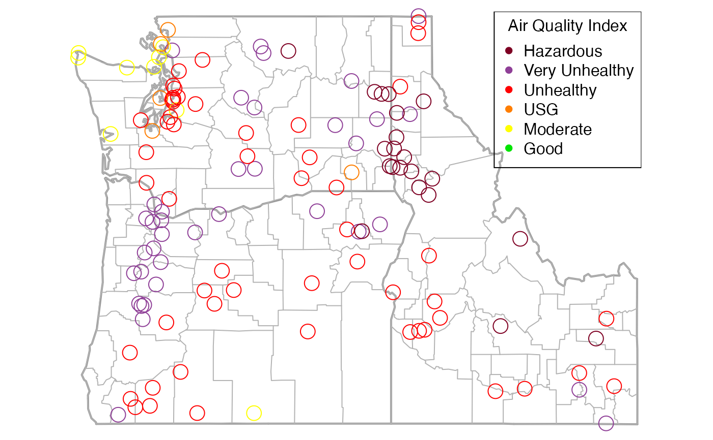

Creates a map of monitoring stations in a given ws_monitor object. Individual
monitor timeseries are reduced to a single value by applying the function
passed in as slice to the entire timeseries of each monitor with
na.rm=TRUE. These values are then plotted over a map of the United
States. Any additional arguments specified in '...' are passed on to the
points() function.
If slice is an integer, it will be used as an index to pull out a
single timestep.
If slice is a function (not a function name) it will be used with
argument na.rm=TRUE to collapse the time dimension. Thus, any user
defined functions passed in as slice must accept na.rm as a
parameter.
monitor_map(ws_monitor, slice = get("max"), breaks = AQI$breaks_24, colors = AQI$colors, cex = par("cex"), stateCol = "grey60", stateLwd = 2, countyCol = "grey70", countyLwd = 1, add = FALSE, ...)
| ws_monitor | ws_monitor object |
|---|---|
| slice | either a time index or a function used to collapse the time axis |
| breaks | set of breaks used to assign colors |
| colors | set of colors must be one less than the number of breaks |
| cex | the amount that the points will be magnified on the map |
| stateCol | color for state outlines on the map |
| stateLwd | width for state outlines |
| countyCol | color for county outline on the map |
| countyLwd | width for county outlines |
| add | logical specifying whether to add to the current plot |
| ... | additional arguments passed to |
Using a single number for the breaks argument will result in the use
of quantiles to determine a set of breaks appropriate for the number of
colors.
